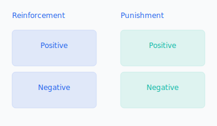
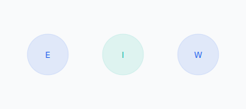

Teorie procesu i behawioryzm
McGregor — Teoria X/Y

X: kontrola, przymus, kary; kryzysy, rutyna, nowi.
Y: zaufanie, autonomia, rozwój; innowacje, eksperci, zaangażowanie.
Skinner — warunkowanie operacyjne
Wzmocnienia: pozytywne/negatywne, kary, wygaszanie.
Harmonogramy: stałe/zmienne, ciągłe/częściowe.
Łącz wzmocnienia z sensem/autonomią, by nie osłabiać motywacji wewnętrznej.
Vroom — teoria oczekiwań
Motywacja = Oczekiwanie × Instrumentalność × Walencja. Wszystkie trzy muszą być obecne.
Adams — teoria sprawiedliwości
Równowaga wkład/wynik i porównania społeczne. Reakcje na niesprawiedliwość: zmiana wkładu, wyniku, percepcji, punktu odniesienia lub odejście.